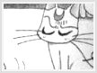
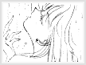
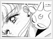

Entity » The Girl» The Superfeline Artemis, pronounced "Artemisu" in Japanese, is an adorable, thoughtful, laid back, but sometimes lazy character. He is the single other guardian cat of the senshi aside from Luna. But mainly, he effectively guides Sailor Venus/Sailor V rather than the rest of the senshi. During the Silver Millenium, he, along with Luna, were advisors to Neo Queen Serenity. When Neo Queen Serenity sent everyone into the future, Luna and Artemis were given the task of finding all the senshi and reuniting them once they were on earth, since the senshi were scattered throughout Earth with out any memories of the time of the Silver Millenium. While Luna was searched in Tokyo, Artemis explored in England. Eventually, he found Minako in England. Minako fought evil in England as Sailor V until Luna found and reunited the other four senshi. Once she did, Artemis and Minako came to Tokyo to join the rest of the sailor soldiers. While Luna awakened the other senshi, Artemis woke Sailor V and revived her memories. It's not quite understood why Artemis only awakened Sailor Venus instead of the other senshi as well. But as Sailor V fought crime for the following years, the two became very close friends. Though Artemis often had trouble tolerating Minako while training, he does show much affection towards her as well. He even sneaked a peak at Minako when she was taking a shower one day, and marveled at her beauty. Artemis trained Sailor V in England long before Usagi and the rest became a Sailor Senshi, so subsequently, Sailor V has much more experience as a senshi. In the manga, Sailor Venus is implied to be the true leader of the sailor senshi. In general, Minako is considered the owner of Artemis. Eventually, Sailor V (now known as Sailor Venus) and Artemis joined the rest of the senshi, and Artemis was reunited with Luna, the other guardian cat. Throughout the entire series, Artemis was constantly flirting with Luna, and made it very apparent that he had a crush on her. Of course, Luna wasn't aware of it at first, for she was more concerned about their mission and training Usagi than anything else. Luna didn't like Artemis at first anyhow, because Artemis was more laid back, and it seemed to Luna that Artemis didn't care as much as he should about their mission. Contrary to Luna's beliefs, Artemis is not actually lazy, he knows when to get down to business, but he also knows when to kick-back, take a bit of a nap to clear his mind and refresh. Viewers learn later that Artemis and Luna have a future daughter named Diana, the guardian cat of Chibi-usa. Although Luna does not return his feelings at first, it is shown later that Luna has some feelings for Artemis. Luna mistakenly assumes that Artemis is in love with a female nun in an episode, and becomes mad at him without let him explain his situation. Most of the time though, Luna is criticizing and insulting Artemis. This is mainly due to her self-conflicting inability to reveal her feelings towards him. As the series goes on, their relationship deepens and soon becomes solid. Therefore they become much better at being able to work together as a team and accomplish what's needed. As briefly mentioned above, Artemis and Minako are very close to each other. When Minako finds the need to confide to someone, Artemis is there to listen to her and possibly give her advice. Such is the case when all of the inner senshi's heart crystals were being taken except for Minako, and she questions the purity of her heart. Artemis reassures her that she does have a heart crystal and does his best to comfort her. Their friendship was not always this close. When Artemis first tells Minako of her role as a senshi in the Codename Wa Sailor V manga, she was reluctant to become a senshi. Therefore Artemis questions if she is really the princess of Venus. Her behavior and exuberant personality seems in contrast with the one who's supposed to be a reincarnation of Venus. One of the reasons that he finally came to accept Minako as the reincarnation is a glance at Minako while she was taking a shower. Artemis had noticed her emergent beauty, and it seemed to him that she was becoming more and more elegant each day.
Quick Statistics: |